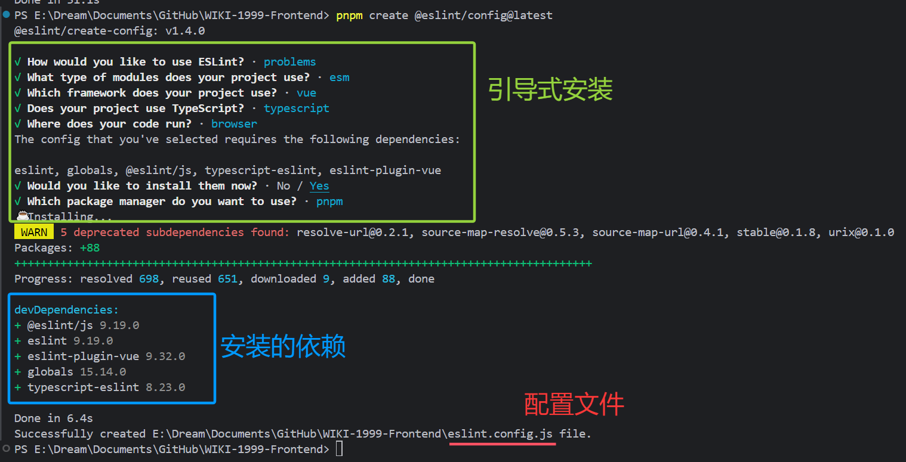

代码审查和git commit引导、校验工作流
引言
文章内容仅代表个人见解，如有错漏之处欢迎指出。
此工作流主要使用如下库：
prettier：代码格式化
eslint：代码检查
lint-staged：检查暂存区代码
commitlint：git commit 信息格式校验commitizen ：cz-git 必需库
cz-git：引导式 git 提交工具
husky：Git hooks 钩子工具,用于在 Git 操作前后执行自定义脚本
一、说明
（一）项目环境及结构
1、项目环境
本示例环境如下表：
| 环境/工具 | 版本 |
|---|---|
| 操作系统 | Windows 10 |
| 编译器 | VScode 1.96.4 |
| Node | 20.16.0 |
| 项目环境 | Vue3 + TypeScript |
2、项目结构
项目结构如下：
│── .husky //需要新建的husky文件夹
│ ├── _ //此文件夹是husky的自带脚本，内部文件命名代表git的Hooks的生命周期
│ ├── commit-msg //提交信息完成之后执行
│ └── pre-commit //提交信息(引导)完成之后，提交代码到本地仓库之前执行执行的脚本
│── .prettierignore //prettier检查忽略文件
│── .prettierrc.cjs //prettier配置
│── commitlint.config.cjs //commitlint和cz-git配置
│── eslint.config.js //eslint配置
└── package.json //包管理文件3、package.json
package.json配置和依赖版本如下：
{
"type": "module",
"scripts": {
"lint-staged": "lint-staged",
"prettier": "prettier --check .",
"check": "eslint .",
"lint": "eslint . --fix",
"lint:prettier": "prettier . --write",
"lint:commitlint": "commitlint --edit $1",
"commit": "git add . && pnpm exec lint-staged && cz"
},
"lint-staged": {
"**/*.{cjs,mjs,js,jsx,tsx,ts,less,md,json}": [
"pnpm exec eslint --fix"
]
},
"config": {
"commitizen": {
"path": "node_modules/cz-git"
}
},
"devDependencies": {
"@commitlint/cli": "^19.7.1",
"@commitlint/config-conventional": "^19.7.1",
"@commitlint/types": "^19.5.0",
"@eslint/js": "^9.19.0",
"@typescript-eslint/eslint-plugin": "^8.22.0",
"@typescript-eslint/parser": "^8.22.0",
"cz-git": "^1.11.0",
"eslint": "^9.19.0",
"eslint-config-prettier": "^10.0.1",
"eslint-plugin-prettier": "^5.2.3",
"eslint-plugin-vue": "^9.32.0",
"globals": "^15.14.0",
"husky": "^9.1.7",
"lint-staged": "^15.4.3",
"prettier": "^3.4.2",
"typescript-eslint": "^8.22.0",
"vue-eslint-parser": "^9.4.3",
}
}
（二）工作流程
1、执行 commit 提交操作 [husky进行如下自动步骤]
2、【可选】将被修改的代码添加到暂存区
3、【自动】对暂存区进行代码格式化和检查 (检查无误进入下一步) [prettier+eslint+lint-staged]
4、【可选】进行引导式提交，对 commit 信息格式化 [commitizen+cz-git]
5、【自动】对 commit 信息的格式进行检查 (检查无误进入下一步) [commitlint]
6、代码提交到本地仓库
二、代码审查：
（一）Prettier
Prettier中文网：https://prettier.nodejs.cn/docs/en/index.html
安装依赖
pnpm add prettier -D添加配置文件
- 配置
.prettierrc.cjs文件项目根目录下创建
.prettierrc.cjs文件，自定义prettier格式配置，prettier检查代码时会遵循以下规则。// .prettierrc.cjs // @see: https://www.prettier.cn module.exports = { // 指定最大换行长度(HTML 和 Vue 模板中的元素) printWidth: 130, // 强制文本换行(Markdown 和纯文本内容) proseWrap: "always", // 缩进制表符宽度 | 空格数 tabWidth: 2, // 使用制表符而不是空格缩进行 (true：制表符，false：空格) [空格更易于在不同编辑器下控制和确保一致性] useTabs: false, // 结尾不用分号 (true：有，false：没有) semi: false, // 使用单引号 (true：单引号，false：双引号) singleQuote: false, // 在对象字面量中决定是否将属性名用引号括起来 可选值 "<as-needed|consistent|preserve>" quoteProps: "as-needed", // 在JSX中使用单引号而不是双引号 (true：单引号，false：双引号) jsxSingleQuote: false, // 多行时尽可能打印尾随逗号 "<none|es5|all>" ["es5"：在对象和数组中，只有在 ES5 允许的地方（即多行时）才添加尾随逗号 可选值] trailingComma: "es5", // 在对象，数组括号与文字之间加空格 "{ foo: bar }" (true：有，false：没有) bracketSpacing: true, // 将 > 多行元素放在最后一行的末尾，而不是单独放在下一行 (true：放末尾，false：单独一行) bracketSameLine: false, // (x) => {} 箭头函数参数只有一个时是否要有小括号 (avoid：省略括号，always：不省略括号) // arrowParens: "avoid", // 指定要使用的解析器，不需要写文件开头的 @prettier requirePragma: false, // 可以在文件顶部插入一个特殊标记，指定该文件已使用 Prettier 格式化 insertPragma: false, // 在html中空格是否是敏感的 "css" - 遵守 CSS 显示属性的默认值， "strict" - 空格被认为是敏感的 ，"ignore" - 空格被认为是不敏感的 htmlWhitespaceSensitivity: "css", // 控制在 Vue 单文件组件中 <script> 和 <style> 标签内的代码缩进方式 [false：代码不会额外缩进，与外部代码对齐。true：会相对于组件的其他部分进行缩进。] vueIndentScriptAndStyle: false, // 换行符 ("auto"：根据当前操作系统自动选择换行符,"lf"：Linux和macOS,"crlf"：Windows,"cr":旧操作系统) endOfLine: "auto", // 这两个选项可用于格式化以给定字符偏移量（分别包括和不包括）开始和结束的代码 (rangeStart：开始，rangeEnd：结束) rangeStart: 0, rangeEnd: Infinity, }
- 配置
.prettierignore文件项目根目录下创建
.prettierignore文件，自定义 prettier 忽略文件配置，prettier 检查代码时会忽略其内的文件。/dist/* .local /node_modules/** **/*.svg **/*.sh /public/* auto-imports.d.ts components.d.ts
- 在
package.json中添加脚本check:prettier脚本仅检查项目中所有非忽略列表的文件代码格式；lint:prettier脚本会按照规则直接修改项目中所有非忽略列表的文件代码，使其符合规则。"scripts": { "check:prettier": "prettier --check .", "lint:prettier": "prettier . --write", }脚本配置完整之后可以依次尝试是否有效。
（二）ESLint
ESLint 中文网：https://eslint.nodejs.cn/docs/latest/use/getting-started
注意，本示例使用 ESLint 9，如需使用必须安装并构建 Node.js（^18.18.0、^20.9.0 或 >=21.1.0）并支持
SSL。（如果你使用的是官方 Node.js 发行版，则始终内置 SSL。）
如果你使用的是更低版本的 ESLint，请查看官网、其他教程或询问AI如何修改，因为旧版配置格式与下方示例有很大不同。因此，在使用 ESLint 9结合其他插件的配置时，请检查其他插件是否支持扁平化配置。
安装依赖
- 安装 ESLint
输入下面的命令进行引导式安装(如下图)，可以根据项目自定义配置。
pnpm create @eslint/config@latest
{kind=link}
- 安装其他插件
eslint-plugin-prettier用于导入 prettier 的格式化规则，转换为 ESLint 的规则，以便在 ESLint 中使用 prettier 的格式化规则，简单来说就是兼容二者使其不冲突。pnpm add -D @typescript-eslint/eslint-plugin @typescript-eslint/parser eslint-config-prettier eslint-plugin-prettier vue-eslint-parser
添加配置文件
- 配置
eslint.config.js文件注意：后写的同名规则会覆盖前面的规则，故带
"prettier/prettier": ["error", prettierConfig]的规则写在末尾，让 ESLint 使用 Prettier 规则进行代码格式检查，且使 Prettier 规则不被其它规则覆盖。项目根目录下创建
eslint.config.js文件，导入了js推荐配置、vue推荐配置、prettier格式配置、以及其他的 ESLint 规则（包含自定义的prettier格式配置），ESLint 检查代码时会遵循以下规则。本示例采用的是
prettier+ESLint二者的规则进行代码格式化，ESLint 再进行代码审查。如果你用的不是prettier进行代码格式化，或不使用其他格式化工具，ESLint 也可支持代码格式化。// eslint.config.js // @see: https://eslint.nodejs.cn/docs import globals from "globals" import eslint from "@eslint/js" import tseslint from "typescript-eslint" import eslintPluginVue from "eslint-plugin-vue" import vueParser from "vue-eslint-parser" import eslintPluginPrettierRecommended from "eslint-plugin-prettier/recommended" import prettier from "eslint-plugin-prettier" import prettierConfig from "./.prettierrc.cjs" export default [ { /**忽略格式检查的文件列表*/ ignores: [ "node_modules", "dist", ".gitignore", "package.json", "package-lock.json", "dist-ssr", "*.local", ".npmrc", ".DS_Store", "dev-dist", "dist_electron", "*.d.ts", "src/assets/**", ], }, /** js推荐配置 */ eslint.configs.recommended, /** vue推荐配置 */ ...eslintPluginVue.configs["flat/recommended"], /** prettier 配置 */ eslintPluginPrettierRecommended, /**自定义规则*/ { //此处可细化拆分使用哪些工具检查哪些类型的代码 files: ["**/*.{js,mjs,cjs,ts,vue}"], languageOptions: { parser: vueParser, globals: { ...globals.browser, ...globals.node }, parserOptions: { /** typescript项目需要用到这个 */ parser: tseslint.parser, ecmaVersion: "latest", /** 允许在.vue 文件中使用 JSX */ ecmaFeatures: { jsx: true, }, }, }, plugins: { "@typescript-eslint": tseslint, prettier: prettier, vue: eslintPluginVue, }, rules: { "prettier/prettier": ["error", prettierConfig], // 让 ESLint 执行 Prettier 规则 // 对象结尾逗号 "comma-dangle": "off", // 关闭未定义变量 "no-undef": "off", //不使用的变量不报错 "no-unused-vars": "off", // 禁止使用不规范的空格 "no-irregular-whitespace": "off", // 构造函数首字母大写 "new-cap": [2, { newIsCap: true, capIsNew: false }], // new 操作符使用时需要括号 "new-parens": 2, // 禁止使用 Array 构造函数 "no-array-constructor": 2, // 禁止调用 caller 和 callee "no-caller": 2, // 禁止重新分配类名 "no-class-assign": 2, // 禁止条件中的赋值操作 "no-cond-assign": 2, // 禁止 const 重新分配 "no-const-assign": 2, // 禁止删除变量 "no-delete-var": 2, // 禁止在函数参数中使用重复名称 "no-dupe-args": 2, // 禁止在类中使用重复名称的成员 "no-dupe-class-members": 2, // 禁止在对象字面量中使用重复的键 "no-dupe-keys": 2, // 禁止重复的 case 标签 "no-duplicate-case": 2, // 禁止空的字符类 "no-empty-character-class": 2, // 禁止空的解构模式 "no-empty-pattern": 2, // 禁止使用 eval "no-eval": 2, // 不允许出现空的代码块 "no-empty": 2, // 禁止不必要的布尔转换 "no-extra-boolean-cast": 2, // 禁止不必要的括号 "no-extra-parens": [2, "functions"], // 禁止 case 语句落空 "no-fallthrough": 2, // 禁止在数字后面添加小数点 "no-floating-decimal": 2, // 禁止对函数声明重新赋值 "no-func-assign": 2, // 禁止出现歧义多行表达式 "no-unexpected-multiline": 2, // 禁止不需要的转义 "no-useless-escape": 0, "vue/no-mutating-props": ["error", { shallowOnly: true }], // 要求组件名称始终为 “-” 链接的单词 "vue/multi-word-component-names": "off", // 关闭 index.html 文件报 clear 错误 "vue/comment-directive": "off", // 关闭对 defineProps 的有效性检查 "vue/valid-define-props": "off", // 允许在一个文件中定义多个组件 "vue/one-component-per-file": "off", // 关闭 Prop 类型要求的警告 "vue/require-prop-types": "off", // 属性顺序要求 "vue/attributes-order": [ "error", { order: [ "DEFINITION", // e.g. 'is', 'v-is' "LIST_RENDERING", // e.g. 'v-for item in items' "CONDITIONALS", // e.g. 'v-if', 'v-else-if', 'v-else', 'v-show', 'v-cloak' "RENDER_MODIFIERS", // e.g. 'v-once', 'v-pre' "GLOBAL", // e.g. 'id' "UNIQUE", // e.g. 'ref', 'key' "SLOT", // e.g. 'v-slot', 'slot' "TWO_WAY_BINDING", // e.g. 'v-model' "OTHER_DIRECTIVES", // e.g. 'v-custom-directive' "OTHER_ATTR", // Includes ATTR_DYNAMIC, ATTR_STATIC, ATTR_SHORTHAND_BOOL "EVENTS", // e.g. '@click="functionCall"', 'v-on="event"' "CONTENT", // e.g. 'v-text', 'v-html' ], alphabetical: false, //同组内的属性会按字母排序(true) }, ], // 关闭对默认 Prop 的要求 "vue/require-default-prop": "off", // 允许使用 v-html 指令 "vue/no-v-html": "off", }, }, ]
- 在
package.json中添加脚本"check": "eslint ."脚本仅检查项目中所有非忽略列表的文件代码格式；"lint": "eslint . --fix"脚本会按照规则直接修改项目中所有非忽略列表的文件代码，并再次报告无法修改的格式错误。"scripts": { "check": "eslint .", "lint": "eslint . --fix", }脚本配置完整之后可以依次尝试是否有效，日常使用
lint脚本进行检查并修复；运行任意脚本后控制台报红，则表示有代码不符合格式规则或不正确，如果提醒“- - fix”且下方显示可修复，则可再次运行
lint脚本进行检查并修复，否则需要手动前往该文件进行修改；如果项目代码格式全部匹配你创建的规则，ESLint 不会输出任何成功提示信息，这点和prettier不同。
（三）lint-staged
针对暂存区需要提交的文件运行格式化程序和代码审查等任务。仅对“暂存区”的代码进行操作，这样只会检查本次你修改的代码，而不必每次提交代码时检查并修改整个项目的代码——这会使你的团队成员无法辨别哪些是格式变动，哪些是你真正的逻辑变更。（同时防止替人背锅）
项目地址：
安装依赖
pnpm add lint-staged -D添加配置文件
在package.json中添加脚本
lint-staged
脚本仅针对项目暂存区中的，匹配以下规则的代码执行对应的检查脚本，一般用于结合 husky 以在提交代码前自动触发，如果检查不通过会中断提交操作。（后文会介绍）{
"scripts": {
"lint-staged": "lint-staged",
},
"lint-staged": {
"**/*.{cjs,mjs,js,jsx,tsx,ts,less,md,json}": [
"pnpm exec eslint --fix"
]
}
}脚本配置完整之后可以尝试"lint-staged"脚本是否有效。
下方的"lint-staged"
是lint-staged的配置项，你也可以根据不同的文件类型运行不同的脚本，也可以依次使用多个检查脚本，如下方示例：
"lint-staged": {
"**/*.{js,ts,less,md,json}":[
"pnpm run test_1",
"pnpm run test_2"
],
"**/*.{cjs,mjs,jsx,tsx}": [
"pnpm exec eslint --fix"
]
}但因为在前文的配置中 prettier 规则已经内置于 eslint 规则中，此处仅配置 eslint 的脚本即可。
三、Git检查
（一）commitlint
用于规范和检查你的提交信息格式。commitlint官网：
https://commitlint.js.org/guides/local-setup.html
安装依赖
pnpm add @commitlint/cli @commitlint/config-conventional @commitlint/types -D添加配置文件
- 配置
commitlint.config.cjs文件注意：如果你需要后文
cz-git的引导性提交功能，会有另外的commitlint.config.cjs配置，可直接前往查看cz-git教程。此处示例不包括cz-git配置项；规则没有逐一测试检查，如有错误还请反馈。
项目根目录下创建
commitlint.config.cjs文件，自定义commitlint格式配置。// commitlint.config.cjs // @see https://commitlint.js.org/ module.exports = { extends: ["@commitlint/config-conventional"], parserPreset: { parserOpts: { /**提交信息正则，可自定义，此处代表：type(scope): subject，即类型(范围)：主题 * scope为可选，且限定格式只包含英文逗号(用于单次提交多个scope)、下划线、字母（中英文）、数字 * 若自定义，需要注意和rules中的type-enum相匹配，否则会校验报错type或subject为空 */ headerPattern: /^([\w-]+)(?:\(([\w\u4e00-\u9fa5a-zA-Z0-9,_-]+)\))?:\s([\s\S]+)$/, headerCorrespondence: ["type", "scope", "subject"], }, }, rules: { "scope-case": [2, "always", ["lower-case", "camel-case", "kebab-case"]], // scope 小写，允许中文 "subject-case": [0], // 关闭 subject 大小写规则 "type-empty": [2, "never"], // 确保 type 不为空 "subject-empty": [2, "never"], // 确保 subject 不为空 "type-enum": [ 2, "always", [ "init", // 初始化 "feat", // 新增功能 "fix", // 修复缺陷 "docs", // 文档变更 "style", // 代码格式（不影响功能，例如空格、分号等格式修正） "refactor", // 代码重构（不包括 bug 修复、功能新增） "perf", // 性能优化 "test", // 添加疏漏测试或已有测试改动 "build", // 构建流程、外部依赖变更（如升级 npm 包、修改 webpack 配置等） "ci", // 持续集成相关的提交（修改 CI 配置文件、构建流程、自动化测试等） "chore", // 对构建过程或辅助工具和库的更改（不影响源文件、测试用例） "revert", // 回滚提交的代码 ], ], } }
- 测试脚本
注意：因为下文才会配置
husky来在每次提交时自动运行commitlint脚本，所以此处只能手动运行commitlint检查上一次的提交信息。运行下方命令，可以检查上一次的提交信息是否符合规则。
commitlint --edit .git/COMMIT_EDITMSG
（二）cz-git
用于引导开发者填写提交信息。如开发者所说，我也是尝试了cz-customizable 和 git-cz 之后觉得配置过少，最后才选择了
cz-git。cz-git 官网：
https://cz-git.qbb.sh/zh/guide/

安装依赖
- 安装
commitizencz-git需要全局安装commitizen来运行。pnpm add -g commitizen
- 安装
cz-gitcz-git可以全局安装也可以项目内安装，可以查看官网。全局安装可以在所有项目中使用，项目被安装仅在当前项目中生效。
本示例采用项目内安装。
pnpm add cz-git -D
添加配置文件
cz-git也有多种配置方式，单独文件配置或与提交检查工具的组合配置，详见官网。
本示例采用与commitlint的组合配置。
- 配置
commitlint.config.cjs文件注意：此处示例包括
cz-git配置项和commitlint配置项，其中cz-git的配置项都在prompt中，其余部分都是commitlint配置项；外部的scope本地缓存设置若不需要可删除相关代码；
规则没有每一项都测试检查，如有错误还请反馈。
项目根目录下创建
commitlint.config.cjs文件，自定义commitlint格式配置和cz-git配置项，以及cz-git的scope本地缓存设置项。// commitlint.config.cjs // @see https://commitlint.js.org/ // @see https://cz-git.qbb.sh/zh/guide/ const { defineConfig } = require("cz-git") const { resolve } = require("path") const fs = require("fs") //#region scope本地缓存设置,每次新增的自定义scope都会追加到scope选项末尾 /**项目配置的默认scope*/ const defaultScopeArr = ["core", "deps", "config", "ui", "auth", "api", "store", "hook", "util"] /**本地缓存文件，可在本地git仓库中查看或删除(需要在资源管理器中打开隐藏文件夹)*/ const __SCOPE_CACHE_PATH = resolve(__dirname, "./.git/scope-cache.json") /**用正则过滤只包含英文逗号、下划线、字母（中英文）、数字的有效 scope*/ const isValidScope = (scope) => { const regex = /^[a-zA-Z0-9\u4e00-\u9fa5_-]+$/ // 只允许字母、数字、下划线、中文、逗号 return regex.test(scope) } /**将自定义scope写入缓存*/ const setCacheScope = (scope) => { if (!scope) return const localScope = defaultScopeArr.map((s) => s.trim().toLowerCase()) // 分割并去除空白的 scope 项 const scopes = scope .toLowerCase() .split(",") .map((s) => s.trim()) // 去除空格 .filter(isValidScope) // 过滤有效的 scope .filter((s) => !localScope.includes(s)) // 过滤掉本地的 scope // console.log("项目defaultScope", localScope) // console.log("去重后的缓存scopes", scopes) if (scopes.length === 0) return // 如果没有有效的 scope，直接返回 // 读取已有的缓存 let cacheScopes = [] if (fs.existsSync(__SCOPE_CACHE_PATH)) { cacheScopes = JSON.parse(fs.readFileSync(__SCOPE_CACHE_PATH, "utf8")) } // 将新的 scope 添加到缓存中并去重 const newScopes = new Set([...cacheScopes, ...scopes]) fs.writeFileSync(__SCOPE_CACHE_PATH, JSON.stringify([...newScopes], null, 2), "utf8") } /**获取缓存的scope并与项目的scope合并*/ const getCacheScope = () => { if (!fs.existsSync(__SCOPE_CACHE_PATH)) { return defaultScopeArr } else { const cacheScopeArr = JSON.parse(fs.readFileSync(__SCOPE_CACHE_PATH, "utf8")) return [...new Set([defaultScopeArr, ...cacheScopeArr])] } } //#endregion module.exports = defineConfig({ extends: ["@commitlint/config-conventional"], parserPreset: { parserOpts: { /**提交信息正则，可自定义，此处代表：type(scope): subject，即类型(范围)：主题 * scope为可选，且限定格式只包含英文逗号(用于单次提交多个scope)、下划线、字母（中英文）、数字 * 若自定义，需要注意和rules中的type-enum和prompt中的types相匹配，否则会校验报错type或subject为空 */ headerPattern: /^([\w-]+)(?:\(([\w\u4e00-\u9fa5a-zA-Z0-9,_-]+)\))?:\s([\s\S]+)$/, headerCorrespondence: ["type", "scope", "subject"], }, }, rules: { "scope-case": [2, "always", ["lower-case", "camel-case", "kebab-case"]], // scope 小写，允许中文 "subject-case": [0], // 关闭 subject 大小写规则 "type-empty": [2, "never"], // 确保 type 不为空 "subject-empty": [2, "never"], // 确保 subject 不为空 "type-enum": [ 2, "always", [ "init", // 初始化 "feat", // 新增功能 "fix", // 修复缺陷 "docs", // 文档变更 "style", // 代码格式（不影响功能，例如空格、分号等格式修正） "refactor", // 代码重构（不包括 bug 修复、功能新增） "perf", // 性能优化 "test", // 添加疏漏测试或已有测试改动 "build", // 构建流程、外部依赖变更（如升级 npm 包、修改 webpack 配置等） "ci", // 持续集成相关的提交（修改 CI 配置文件、构建流程、自动化测试等） "chore", // 对构建过程或辅助工具和库的更改（不影响源文件、测试用例） "revert", // 回滚提交的代码 ], ], }, prompt: { alias: { fd: "docs: fix typos" }, messages: { type: "选择你要提交的类型 :", scope: "选择一个提交范围（可选，custom为自定义，空格键或右键多选，回车键确认）:", customScope: "请输入自定义的提交范围（仅支持用下划线、中文字符、小写英文字符、数字，且用 , 分隔）:", subject: "填写简短精炼的变更描述 :\n", body: "填写更加详细的变更描述（可选）。使用 | 换行 :\n", breaking: "列举非兼容性重大的变更（可选）。使用 | 换行 :\n", footerPrefixesSelect: "选择关联issue前缀（可选）:", customFooterPrefix: "输入自定义issue前缀 :", footer: "列举关联issue (可选) 例如: #31, #I3244 :\n", confirmCommit: "是否提交或修改commit ?", }, types: [ { value: "init", name: "🛠️ init: 初始化 | Project initialization", emoji: ":hammer_and_wrench:" }, { value: "feat", name: "✨ feat: 新增功能 | A new feature", emoji: ":sparkles:" }, { value: "fix", name: "🐛 fix: 修复缺陷 | A bug fix", emoji: ":bug:" }, { value: "docs", name: "📖 docs: 文档更新 | Documentation only changes", emoji: ":book:" }, { value: "style", name: "💅 style: 代码格式（不影响功能，例如空格、分号等格式修正） | Changes that do not affect the meaning of the code", emoji: ":nail_care:", }, { value: "refactor", name: "🔨 refactor: 代码重构（不包括 bug 修复、功能新增） | A code change that neither fixes a bug nor adds a feature", emoji: ":wrench:", }, { value: "perf", name: "🚀 perf: 性能优化 | A code change that improves performance", emoji: ":rocket:" }, { value: "test", name: "🧪 test: 测试相关，添加疏漏测试或已有测试改动 | Adding missing tests or correcting existing tests", emoji: ":test_tube:", }, { value: "build", name: "📦 build: 构建流程、外部依赖变更（如升级 npm 包、修改 webpack 配置等） | Changes that affect the build system or external dependencies", emoji: ":package:", }, { value: "ci", name: "🤖 ci: 持续集成相关的提交（修改 CI 配置文件、构建流程、自动化测试等） | Changes to our CI configuration files and scripts", emoji: ":robot:", }, { value: "chore", name: "🔧 chore: 对构建过程或辅助工具和库的更改（不影响源文件、测试用例） | Other changes that do not modify src or test files", emoji: ":wrench:", }, { value: "revert", name: "⏪ revert: 回退提交的代码 | Revert to a commit", emoji: ":rewind:" }, ], useEmoji: true, emojiAlign: "center", // 设置 Emoji 字符 的 位于头部位置["left" | "center" | "right"] useAI: false, aiNumber: 1, themeColorCode: "", scopes: getCacheScope(), // @see: https://github.com/Zhengqbbb/cz-git#options formatMessageCB: ({ defaultMessage, scope }) => { // eslint-disable-next-line no-control-regex setCacheScope(scope.replaceAll(/\x1B\[[0-9;]*[mG]/g, "")) return defaultMessage }, allowCustomScopes: true, allowEmptyScopes: true, customScopesAlign: "bottom", customScopesAlias: "custom", emptyScopesAlias: "empty", upperCaseSubject: false, markBreakingChangeMode: false, //描述 : 添加额外的问题重大变更(BREAKING CHANGES)提问，询问是否需要添加 "!" 标识于头部 allowBreakingChanges: ["feat", "fix"], //仅这两项允许破坏性提交 breaklineNumber: 100, breaklineChar: "|", skipQuestions: [], issuePrefixes: [ // 如果使用 gitee 作为开发管理 { value: "link", name: "link: 链接 ISSUES 进行中" }, { value: "closed", name: "closed: 标记 ISSUES 已完成" }, ], customIssuePrefixAlign: "top", emptyIssuePrefixAlias: "skip", customIssuePrefixAlias: "custom", allowCustomIssuePrefix: true, allowEmptyIssuePrefix: true, confirmColorize: true, scopeOverrides: undefined, defaultBody: "", defaultIssues: "", defaultScope: "", defaultSubject: "", enableMultipleScopes: true, //是否开启在选择 模块范围 时使用多选模式 }, })
- 在
package.json中添加脚本注意：因为下文才会配置
husky来在每次提交时自动运行commitlint脚本，所以此处只能测试cz-git是否正常工作，无法测试commitlint检查。注意
config与scripts同级。{ "scripts": {}, "config": { "commitizen": { "path": "node_modules/cz-git" } } }（1）修改项目内任意文件，并运行命令
git add .将文件提交到暂存区之后；（2）运行命令
cz或git cz会触发git commit提交操作；（3）如果
cz-git工作正常，会显示commitlint.config.cjs的prompt的messages信息，如下图。（4）按
Ctrl键+C键即可退出。
四、工作流合并
husky
用于在git commit前后执行自定义脚本的工具.注意本示例使用的 husky 9，旧版本的配置与本示例不相同。
husky 官网：
安装依赖
- 安装 husky
pnpm add husky -D
- 初始化husky
此命令会在
package.json中创建prepare脚本，在项目根目录下创建.husky文件夹，其中有_文件夹和pre-commit文件。pnpm exec husky initprepare脚本会在您npm install后自动安装Husky的钩子，用于给项目其他成员拉取代码后自动初始化husky。_文件夹中是husky的自带脚本，其文件命名代表git的Hooks的生命周期。开发者可遵照其中命名，在_文件夹同级的创建同名配置文件，在其中自定义需要运行的脚本。例如
pre-commit文件指在提交信息(引导)完成之后，提交代码到本地仓库之前执行。husky的配置文件会按git的Hooks生命周期依次执行，其中的脚本按先后顺序执行。
添加配置文件
- 添加提交信息格式检查hook
在此目录下新建
commit-msg文件，在其中添加如下脚本。pnpm exec commitlint --edit $1这将在你填写完提交信息之后自动对提交信息进行格式检查。
- 添加代码格式检查hook【未配置
cz-git】💡如果你没有配置
cz-git，进行如下配置（1）删除
pre-commit文件中的默认脚本pnpm test，添加下面的脚本；pnpm exec lint-staged这将在提交信息(引导)完成之后，提交代码到本地仓库之前执行之前，所有被修改的代码会添加到暂存区，然后运行配置的脚本
lint-staged进行代码检查（2）在
package.json中添加commit脚本。{ "scripts": { "commit": "git add . && git commit", } }每次执行时会先将被修改的代码添加到暂存区，然后进行提交操作。
此时会触发
husky的pre-commit，运行配置的脚本lint-staged对暂存区代码进行检查，检查无误才能输入commit信息。commit信息输入完成之后会触发
husky的commit-msg对其进行格式检查，然后commitlint检查无误才会将代码提交到本地仓库。
- 添加代码格式检查hook【配置了
cz-git】💡如果你配置了
cz-git，推荐进行如下配置。因为
cz-git的执行时机比pre-commit更早，按上面的配置来，在引导提交信息之后，如果代码格式检查有问题，就需要修改代码之后重新填写commit信息，然后再次检查。当然，你也可以手动运行
lint脚本先检查再提交(1)用
#注释pre-commit中的脚本，或直接删除pre-commit；(2)在
package.json中添加commit脚本。{ "scripts": { "commit": "git add . && pnpm exec lint-staged && cz", } }每次执行时会先将被修改的代码添加到暂存区，然后运行配置的脚本
lint-staged进行代码检查，检查无误才会执行cz进行引导式提交。commit信息输入完成之后会触发
husky的commit-msg对其进行格式检查，然后commitlint检查无误才会将代码提交到本地仓库。